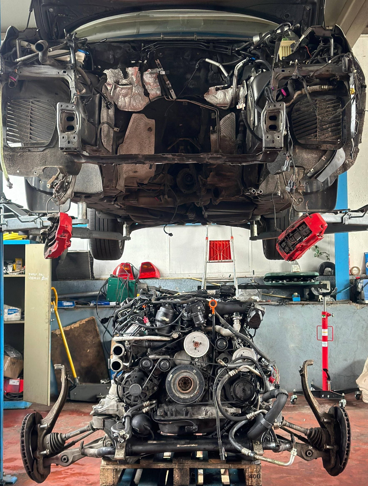
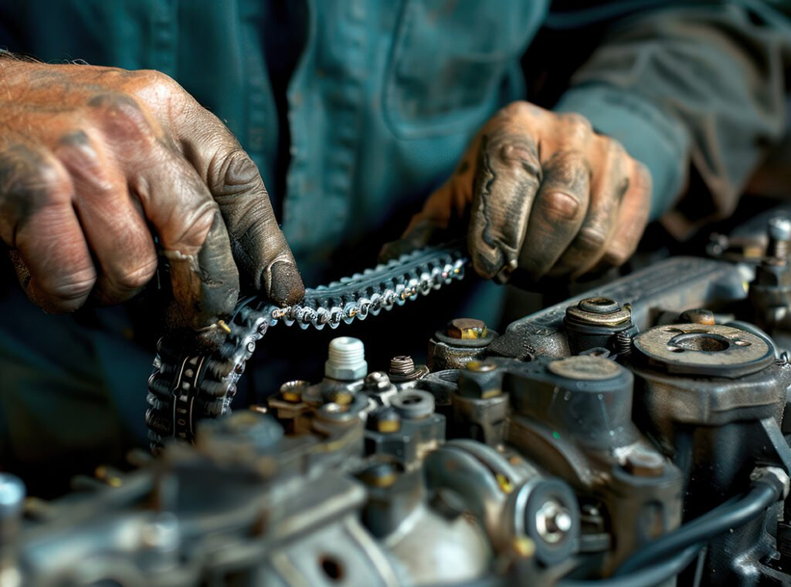
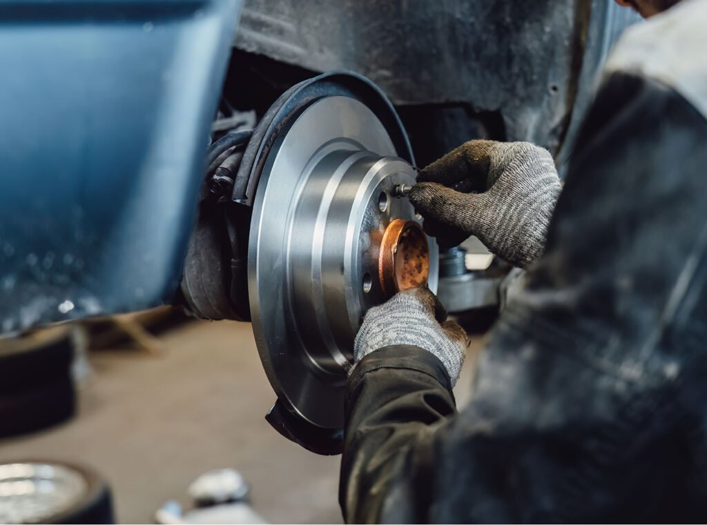
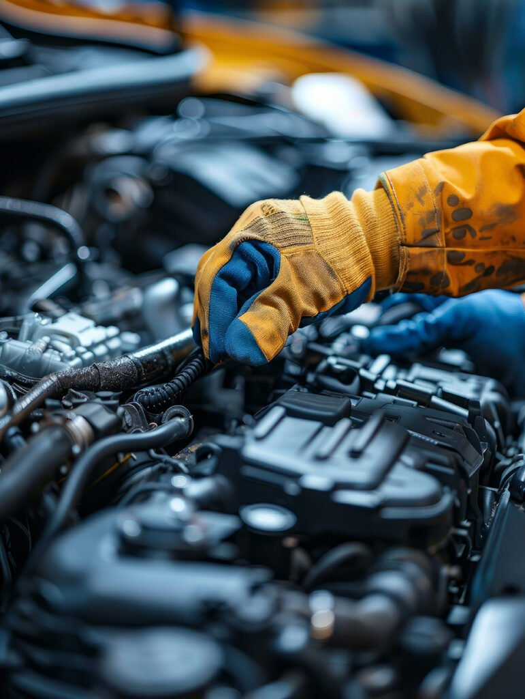
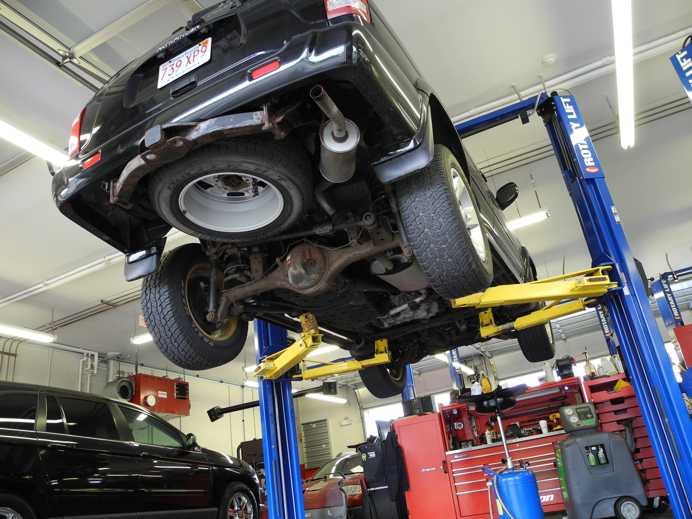

Onderhoud alle merken
Van klein onderhoud tot technische diagnose en herstellingen voor elk merk.
Occasiewagens in Beveren-Waas • Onderhoud alle merken • Pechhulp in het Waasland
Zoekt u een garage in Beveren-Waas, Melsele of omgeving? Bij Layan Garage BV kunt u terecht voor onderhoud en herstellingen voor alle merken, computerdiagnose, pechhulp en de aankoop of verkoop van een tweedehandswagen. Bekijk onze beschikbare occasiewagens of maak een afspraak met de werkplaats.
Onderhoud alle merken
Van klein onderhoud tot technische diagnose en herstellingen voor elk merk.
Eerlijke prijzen
Duidelijke communicatie en transparante afspraken voor elke klant.
Gecontroleerde wagens
Tweedehands voertuigen met aandacht voor betrouwbaarheid en kwaliteit.
Ma–vr open
Snel bereikbaar voor onderhoud, verkoop en praktische ondersteuning.

Contacteer ons voor een gratis computerdiagnose van uw wagen
Onderhoud, herstellingen en gecontroleerde tweedehandswagens onder één dak: daarvoor kunt u bij Layan Garage BV in Beveren-Waas terecht.
Zoekt u een autogarage in de buurt voor een klein of groot onderhoud? We bekijken de staat van uw auto en bespreken welke controles en herstellingen nodig zijn. Van motorolie en filters tot remmen en technische diagnose: de werkzaamheden worden afgestemd op uw voertuig en met u overlegd.
Onze garage is gecertificeerd en officieel erkend als reparateur van een groot aantal automerken.
Ook voor airco-onderhoud, banden wisselen, controle van remblokken en remschijven of vragen over een tweedehandswagen kunt u bij ons terecht. Vertel ons welk merk en model u rijdt en wat uw wagen nodig heeft.
Van maandag tot vrijdag staat ons team klaar voor auto onderhoud in Beveren-Waas, computerdiagnose, remmen, bandenservice, airconditioning en herstellingen van personenwagens en lichte vrachtwagens. Op zaterdag werken wij enkel op afspraak.
Brandt het motorlampje, start uw wagen moeilijk of merkt u vermogensverlies? Voor autodiagnose en het uitlezen van foutcodes kunt u bij Layan Garage BV in Beveren-Waas terecht. We bespreken uw klachten en bekijken welke controle zinvol is.
Een computerdiagnose kan aanwijzingen geven bij motorstoringen, elektrische problemen en waarschuwingslampjes. Een foutcode wijst niet altijd rechtstreeks het defecte onderdeel aan: soms is aanvullend technisch onderzoek nodig voordat een herstelling kan worden voorgesteld.
Onze werkplaats helpt bestuurders van verschillende automerken en modellen. Beschrijf de symptomen van uw auto en vraag naar de gratis computerdiagnose en eventuele vervolgstappen voordat u onderdelen laat vervangen.
Maak een afspraakIs uw auto toe aan een olieverversing of klein onderhoud? Het tijdig vervangen van motorolie en het controleren van de oliefilter helpen de motor in goede conditie te houden. Het juiste onderhoudsinterval hangt af van het merk, de motor en uw rijgebruik.
Bij Layan Garage BV in Beveren-Waas kunt u motorolie en filters laten vervangen als onderdeel van een onderhoudsbeurt. We stemmen de oliespecificatie en de nodige onderdelen af op het model en de motor van uw wagen.
Wilt u olie en oliefilter laten vervangen en meteen andere onderhoudspunten laten nakijken? Bespreek uw kilometerstand en onderhoudshistoriek bij het maken van een afspraak. Zo weet u welke werkzaamheden voor uw auto relevant zijn.
Maak een afspraak
Een distributieriem, aandrijfriem en de slangen onder de motorkap vragen op verschillende momenten aandacht. Wanneer u een distributieriem moet laten vervangen, hangt af van het motortype, de kilometerstand, de leeftijd en het onderhoudsschema van de fabrikant.
Is de onderhoudshistoriek onduidelijk of nadert het vervangingsinterval? Vraag onze garage in Beveren-Waas om advies over de controle of vervanging van riemen en slangen. Sommige motoren hebben een distributieketting in plaats van een riem; daarom beoordelen we de vraag per auto.
Maak een afspraakKoelt de airco van uw auto niet meer goed of beslaan de ruiten snel? Een goed werkende airconditioning draagt bij aan het comfort en helpt bij het ontwasemen van ruiten. Bij Layan Garage BV kunt u de airco laten nakijken in Beveren-Waas.
Verminderde koeling kan verschillende oorzaken hebben, zoals vervuilde filters of een probleem met het aircosysteem. Daarom is het verstandig om de installatie eerst te laten controleren voordat beslist wordt of reinigen of koelmiddel bijvullen nodig is.
Voor airco-onderhoud, controle, reiniging en indien nodig airco bijvullen kunt u een afspraak aanvragen. Geef het merk en model van uw wagen door, zodat we met u kunnen bespreken welke behandeling passend is.
Maak een afspraak
Piepende remmen, trillingen tijdens het remmen of een veranderde remweg kunnen redenen zijn om uw remmen te laten controleren. Blijf niet doorrijden als uw wagen onveilig remt. Onze garage in Beveren-Waas onderzoekt de mogelijke oorzaak.
Bij een remcontrole bekijken we onder meer de slijtage van remblokken en remschijven. Of remblokken of remschijven vervangen moeten worden, hangt af van hun toestand en de specificaties van uw auto.
Ook remvloeistof en remslangen kunnen deel uitmaken van de controle. Wilt u remmen laten nakijken of een remreparatie combineren met auto-onderhoud? Vraag een afspraak en bespreek de werkzaamheden vooraf.
Maak een afspraakGoede autobanden zorgen voor grip en helpen veilig te rijden. Heeft u slijtage, een beschadigde band of terugkerend drukverlies opgemerkt? Laat dan het bandenprofiel, de bandenspanning en de toestand van uw wielen controleren.
Bij Layan Garage BV kunt u in Beveren-Waas terecht voor bandenservice, banden wisselen en advies over de juiste bandenmaat voor uw wagen. Informeer naar de mogelijkheden voor nieuwe of tweedehands banden en de actuele beschikbaarheid.
Een banden- en wielcontrole kan in overleg gecombineerd worden met een onderhoudsbeurt of remcontrole. Zo kunt u meerdere aandachtspunten van uw auto tijdens één afspraak bespreken.
Maak een afspraak
Zoekt u een garage voor klein of groot onderhoud in Beveren-Waas? Regelmatig auto-onderhoud helpt slijtage tijdig op te merken. Afhankelijk van het merk, de kilometerstand en het onderhoudsboekje kijken we onder meer naar motorolie, filters, remmen, banden en andere relevante onderdelen.
Bij Layan Garage BV kunt u terecht voor onderhoud en herstellingen van verschillende automerken, van een periodieke onderhoudsbeurt tot technische controle bij een storing. Geef uw merk, model, bouwjaar en kilometerstand door; dan bespreken we welke werkzaamheden nodig zijn en maken we duidelijke afspraken.
Zoekt u een tweedehands auto te koop in Beveren-Waas of een occasiewagen in de buurt van Melsele en Sint-Niklaas? Bij Layan Garage BV kunt u het actuele aanbod van gecontroleerde gebruikte wagens bekijken. Vergelijk onder meer bouwjaar, kilometerstand, brandstof, versnellingsbak en prijs.
Wilt u uw huidige auto verkopen aan een garage? Neem contact op voor een beoordeling op basis van de staat en gegevens van uw voertuig. Zo kunt u de mogelijkheden voor verkoop en eventueel een andere tweedehandswagen in alle rust bespreken.
Uw auto verkopen in Beveren-Waas zonder zelf een advertentie te plaatsen? Vertel ons het merk, model, bouwjaar, de kilometerstand en de toestand van uw wagen. Na een beoordeling bespreken we of we de auto kunnen overnemen en onder welke voorwaarden.
Een bod hangt onder meer af van de technische staat, onderhoudshistoriek en de actuele vraag naar het model. Als u akkoord gaat met het voorstel, leggen we de afspraken voor de verkoop duidelijk vast.
Wilt u na de verkoop een andere wagen bekijken? U kunt onze actuele selectie occasions raadplegen en in overleg een proefrit aanvragen. Het beschikbare aanbod verandert regelmatig.
Vraag een beoordelingZoekt u een jonge tweedehandsauto, een betaalbare gezinswagen of een gebruikte auto met automatische versnellingsbak? In onze garage in Beveren-Waas kunt u de actuele occasiewagens vergelijken op basis van merk, model, bouwjaar, kilometerstand, brandstof en budget.
We bieden gebruikte wagens van verschillende merken aan, afhankelijk van de huidige voorraad. Bekijk de foto's, kenmerken en prijzen van de auto's die werkelijk beschikbaar zijn en neem contact op voor informatie over de staat van een specifieke wagen.
Heeft u een tweedehandswagen gevonden die bij u past? Vraag naar de beschikbare voertuiggegevens en maak in overleg een afspraak voor een bezichtiging of proefrit. Ook voor later onderhoud kunt u terecht bij onze garage.
Bekijk ons aanbodBekijk hieronder welke tweedehandsauto's en occasiewagens momenteel in Beveren-Waas worden aangeboden. Zoekt u een recente gebruikte auto, een automaat of een wagen in uw prijsklasse? Controleer per voertuig de foto's, prijs, kilometerstand en beschikbaarheid en vraag gerust een proefrit aan.
Start uw auto niet, heeft u pech onderweg of kan uw wagen niet veilig verder rijden? Contacteer Layan Garage BV voor depannage en pechhulp in Beveren-Waas en het Waasland. Beschrijf uw locatie en het probleem, zodat we de mogelijkheden voor diagnose, transport of verdere herstelling kunnen bespreken.
Bel vandaag nog voor een snelle en eerlijke beoordeling van uw wagen in Beveren-Waas. Wij helpen u verder met duidelijke communicatie en een persoonlijke aanpak.
Bereikbaar voor onderhoud alle merken, herstellingen, computerdiagnose en verkoopadvies van maandag tot vrijdag en op zaterdag enkel op afspraak.

Neem contact op voor onderhoud, verkoop, diagnose of een afspraak in onze garage in Beveren-Waas.
Albert Panisstraat 130
9120 Beveren-Waas, België
Heeft u een vraag? Hieronder vindt u de meest gestelde vragen over onze diensten.
Ja, wij kopen tweedehands wagens aan. Breng uw wagen langs of bel ons op 0486 89 00 02 voor een snelle en eerlijke beoordeling. Zo kunt u uw auto verkopen aan een garage in het Waasland zonder onduidelijke afspraken.
Ja, Layan Garage BV verzorgt onderhoud, diagnose en herstellingen voor alle merken personenwagens en lichte bedrijfswagens in Beveren-Waas, Antwerpen en de ruime regio.
Ja, u kunt bellen op 0486 89 00 02 of ons contactformulier invullen voor een computerdiagnose van uw auto. Wij reageren zo snel mogelijk voor een afspraak op maat.
Op zaterdag werken wij enkel op afspraak. Van maandag tot vrijdag zijn wij open van 09:00 tot 18:00.
Bekijk het actuele aanbod occasions op onze website. Per beschikbare wagen vindt u informatie zoals merk, bouwjaar, kilometerstand en prijs. Neem contact op om de beschikbaarheid te bevestigen en een bezichtiging of proefrit af te spreken.
Ja, u kunt bij ons terecht voor een olieverversing en het vervangen van filters voor alle automerken in Beveren-Waas. Maak een afspraak via telefoon of WhatsApp op 0486 89 00 02.
Ja, bij panne, startproblemen of een wagen die niet veilig verder kan rijden, kunt u ons rechtstreeks bellen of via WhatsApp contacteren voor depannage, advies en verdere hulp.
Ja, u kunt bij ons terecht voor airconditioning bijvullen en controleren, banden wisselen, wielcontrole en algemeen onderhoud. We combineren dit indien gewenst met een bredere controle van uw voertuig.
Bel ons direct op 0486 89 00 02 of stuur een WhatsApp-bericht. Wij helpen u snel verder met diagnose, pechhulp of transport naar onze werkplaats in Beveren-Waas.